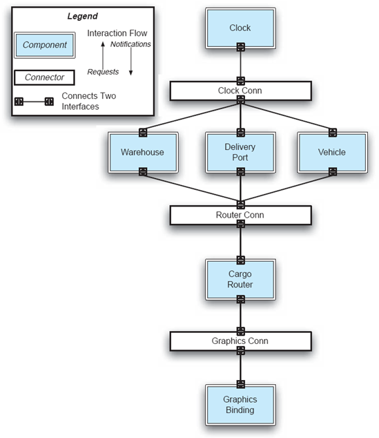
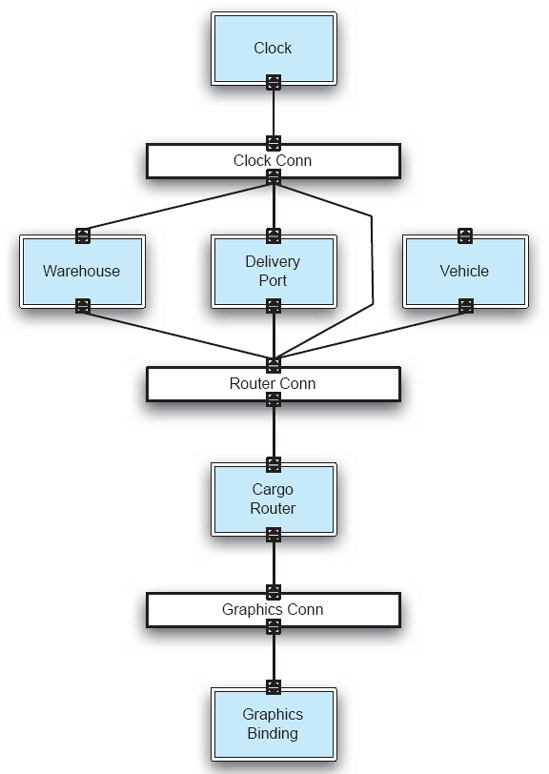
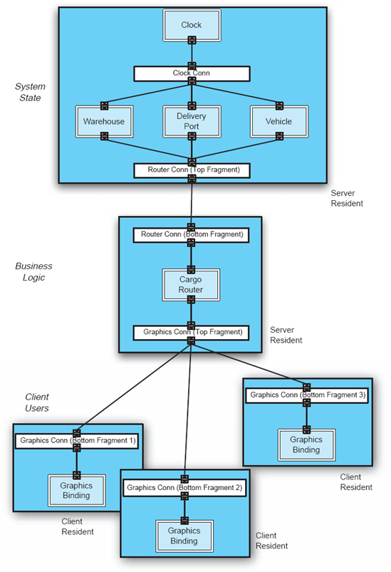
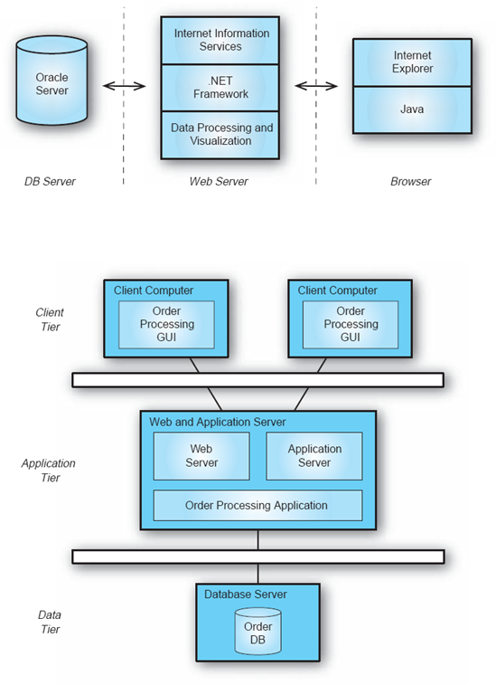
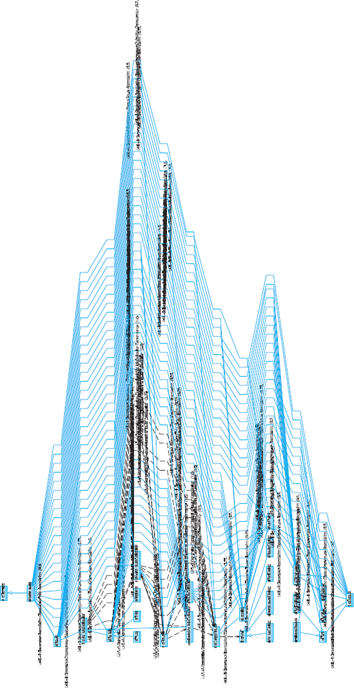

Capítulo 3. Conceitos Básicos
Os capítulos anteriores discutiram informalmente várias noções arquitetônicas de software, como componentes e conectores de software; suas configurações em um dado sistema; relações entre os requisitos de um sistema, sua arquitetura e sua implementação; e linhas de produtos de software. Essas ideias serviram para fornecer contexto ao campo da arquitetura de software, situá-lo em outras facetas da engenharia de software e motivar seu papel e importância únicos. De fato, geralmente evitamos definições de termos na esperança de que o leitor reconheça mais facilmente muitos dos conceitos discutidos em sua própria experiência, ou consiga relacionar os conceitos arquitetônicos com aqueles com os quais já está familiarizado.
Embora termos informais tenham um papel útil na introdução de conceitos, as incertezas resultantes podem dificultar uma compreensão mais profunda. Portanto, o objetivo deste capítulo é definir os termos-chave e ideias-chave do campo da arquitetura de software, fornecendo uma base uniforme para sua discussão no restante do livro. Elementos-chave do design centrado na arquitetura e suas inter-relações, técnicas e processos básicos para desenvolver a arquitetura de um sistema de software, e os stakeholders relevantes e seus papéis no desenvolvimento de software baseado em arquitetura são apresentados e ilustrados com exemplos simples.
Resumo do Capítulo 3
TERMINOLOGIA
Começamos a apresentação dos termos-chave do campo com uma exploração da própria arquitetura de software e de vários conceitos ligados a ela, como a degradação arquitetônica. Os principais elementos constituintes das arquiteturas são então explorados, incluindo componentes, conectores e configurações. Dois tipos importantes de conhecimento arquitetônico potencialmente profundo — padrões e estilos arquitetônicos — são então definidos e examinados.
Arquitetura
Em sua essência, a arquitetura de software é definida de forma bastante simples, da seguinte forma.
Definição. A arquitetura de um sistema de software é o
conjunto de decisões principais de design tomadas sobre o sistema.
Em outras palavras, a arquitetura de software é o plano para a construção e evolução de um sistema de software. A noção de decisão de design é central para a arquitetura de software e para todos os conceitos baseados nela. Por exemplo, a noção especial de arquiteturas de famílias de produtos foi brevemente introduzida no Capítulo 1. Arquiteturas de famílias de produtos são ancoradas na ideia de arquitetura de referência, definida da seguinte forma.
Definição. Uma arquitetura de referência é o conjunto de
decisões principais de projeto que são simultaneamente aplicáveis a múltiplos
sistemas relacionados, tipicamente dentro de um domínio de aplicação, com
pontos de variação explicitamente definidos.
As decisões de projeto abrangem todos os aspectos do sistema em desenvolvimento, incluindo:
Note que, na discussão e nos exemplos anteriores, usamos termos como elemento e módulo, que ainda não definimos. Você pode pensar neles simplesmente como blocos de construção (semelhantes a tijolos na construção de estruturas físicas) dos quais a arquitetura é composta. Em breve os abordaremos de forma mais rigorosa.
Outro termo importante que aparece nas definições acima é principal. Implica um grau de importância e atualidade que confere a uma decisão de projeto status arquitetônico, ou seja, que a torna uma decisão de projeto arquitetônico. Também implica que nem todas as decisões de design são arquitetônicas. Na verdade, muitas das decisões de design tomadas no processo de engenharia de um sistema (por exemplo, os detalhes dos algoritmos ou estruturas de dados selecionados) não impactarão a arquitetura do sistema. Como se define o principal dependerá dos objetivos do sistema. Em última análise, as partes interessadas do sistema (incluindo, mas não se restringindo apenas ao arquiteto) decidirão quais decisões de design são ou não importantes o suficiente para serem incluídas na arquitetura.
Com base nisso, observe que a arquitetura é pelo menos em parte determinada pelo contexto, que considerações não técnicas podem acabar impulsionando-a, e que diferentes conjuntos de partes interessadas podem considerar diferentes conjuntos de decisões de projeto como primordiais (ou seja, arquitetônicas). Discutimos isso mais abaixo e em outros lugares do texto.
Outra observação decorrente da definição de arquitetura de software é que cada conjunto de decisões principais de design pode ser pensado como uma arquitetura diferente. Ao longo da vida útil de um sistema, essas decisões de design serão tomadas e desfeitas; Eles vão mudar, evoluir, "bifurcar", convergir, e assim por diante. À medida que a arquitetura de um sistema grande, complexo e de longa duração é desenvolvida e evoluída, o conjunto correspondente de decisões de design arquitetônico será alterado centenas de vezes. O resultado será, na prática, centenas de arquiteturas diferentes (embora relacionadas), em vez de uma única arquitetura. Nesse sentido, a arquitetura tem um aspecto temporal.
Arquitetura Prescritiva versus Arquitetura Descritiva
A qualquer momento, t, durante o processo de engenharia de um sistema de software, os arquitetos desse sistema terão tomado um conjunto de decisões de design arquitetônico, P, que refletem sua intenção. Essas decisões de design compõem a arquitetura prescritiva do sistema. Em outras palavras, essas decisões de projeto representam a prescrição para a construção do sistema. A arquitetura prescritiva é, portanto, a arquitetura do sistema como pretendida ou concebida. A arquitetura prescritiva não precisa necessariamente existir em forma tangível. Por exemplo, pode estar inteiramente na mente dos arquitetos. Alternativamente, a arquitetura prescritiva pode ter sido capturada em uma notação, como uma linguagem de descrição de arquitetura (como as apresentadas no Capítulo 6) ou outra forma de documentação.
É importante notar que documentar a arquitetura prescritiva não é suficiente. O leitor deve lembrar que a arquitetura não é apenas uma fase no processo de desenvolvimento de um sistema de software, mas forma a base crítica do sistema desde seu início até a aposentadoria. Assim, em qualquer momento desse processo, as decisões de design arquitetônico que fazem parte da arquitetura prescritiva (isto é, do conjunto P) serão supostamente refinadas e realizadas com um conjunto de artefatos, A. Esses artefatos podem incluir refinamentos de decisões de design arquitetônico em uma notação como a Unified Modeling Language ou suas implementações em uma linguagem de programação. Os artefatos também podem incluir modelos de estilos arquitetônicos e padrões usados na arquitetura, componentes de software já existentes que serão usados no sistema desejado, frameworks de implementação e infraestruturas middleware que auxiliarão na construção do sistema, especificações de padrões aos quais a arquitetura precisa aderir, entre outros.
Embora muitos dos artefatos em A possam ter existido antes e independentemente da arquitetura em questão, cada um incorpora certas decisões de design que os arquitetos consideram desejáveis e relevantes para o sistema atual. O conjunto completo de decisões principais de projeto, D, incorporado no conjunto de artefatos, A, é referido como arquitetura descritiva do sistema. A arquitetura descritiva é chamada assim porque descreve como o sistema foi realizado. A arquitetura descritiva é, portanto, a arquitetura como realizada do sistema.
O leitor deve notar que, nos estágios iniciais do ciclo de vida de um sistema, o número de artefatos que realizam a arquitetura normalmente será menor do que em estágios posteriores, quando mais parte da arquitetura do sistema já foi elaborada e possivelmente implementada.
De fato, se considerarmos o tempo t 1 para indicar o início do conjunto inicial P 1 de decisões de design arquitetônico para um dado sistema, os conjuntos A 1, e portanto D 1, podem estar vazios. Isso normalmente ocorre no chamado desenvolvimento greenfield, onde o sistema é projetado e implementado do zero. No caso do desenvolvimento brownfield, muitos artefatos que realizam parcialmente a arquitetura de um determinado sistema podem existir antes mesmo da arquitetura ser concebida; em outras palavras, no início de um projeto, t 0, o conjunto D 0 é não vazio enquanto P 0 pode ser um conjunto vazio. Isso ocorre se o novo sistema for membro de uma família de aplicações intimamente relacionada, os estilos arquitetônicos e/ou padrões que serão usados forem conhecidos antecipadamente, as plataformas middleware e/ou linguagens de implementação forem selecionadas, e assim por diante. Outra situação em que P 0 pode estar vazio enquanto D 0 é grande é o desenvolvimento envolvendo um sistema legado cuja intenção arquitetônica se perdeu ao longo do tempo. Tais discrepâncias entre os conjuntos P e D podem indicar problemas na arquitetura de software de um sistema, e serão discutidas mais adiante.
Arquiteturas Prescritivas e Descritivas em Ação: Um
Exemplo
Vamos ilustrar a discussão acima com um exemplo simples. Neste ponto, não se espera que o leitor compreenda todas as nuances e implicações desse exemplo, mas apenas acompanhe o argumento no que diz respeito à arquitetura prescritiva e descritiva.
A Figura 3-1 mostra uma visão gráfica da arquitetura prescritiva de uma aplicação logística simples. Em outras palavras, o diagrama na figura é um modelo da arquitetura em uma linguagem gráfica de descrição de arquitetura. A arquitetura é projetada usando um conjunto de componentes, que implementam a funcionalidade da aplicação, e conectores, que permitem que os componentes chamem as operações uns dos outros e troquem dados. (Componentes e conectores serão definidos de forma mais formal mais adiante neste capítulo.)
Essa aplicação controla o roteamento da carga de um conjunto de Portos de Entrega de entrada para um conjunto de Armazéns por meio de um conjunto de Veículos. O componente Roteador de Carga tenta otimizar o uso dos veículos e entregar a carga ao seu destino correto (ou seja, armazém). O componente Clock fornece o tempo e ajuda os portos, veículos e armazéns a se sincronizarem conforme necessário. Por fim, o componente Binding Gráfico fornece uma interface gráfica que permite a um operador humano avaliar o estado do sistema durante sua execução. Os componentes do sistema interagem por meio de três conectores — Clock Conn, Router Conn e Graphics Conn — trocando requisições e respostas. As linhas que conectam os elementos componentes e conectores na arquitetura representam os caminhos de interação entre os elementos.
A aplicação de roteamento de carga é útil nesta discussão por três razões. Primeiro, sua simplicidade sugere que seus arquitetos deveriam ter sido capazes de avaliar todas as decisões arquitetônicas e seus trade-offs antes da implementação da aplicação. Segundo, a arquitetura foi cuidadosamente implementada com a ajuda de um framework arquitetônico (veja o Capítulo 9 para uma discussão sobre frameworks arquitetônicos), o que permitiu aos desenvolvedores da aplicação realizar todas as decisões de design arquitetônico diretamente no código. Terceiro, além de uma biblioteca de interface gráfica (GUI), nenhuma outra funcionalidade pronta a usar foi usada na implementação, o que permitiu um mapeamento cuidadosamente controlado entre a arquitetura e sua implementação (ou seja, entre os conjuntos P e D).
Uma visão gráfica da arquitetura descritiva (ou seja, conforme realizada) da aplicação de roteamento de carga é mostrada na Figura 3-2. Embora haja muitos artefatos no conjunto A desta aplicação (incluindo o estilo arquitetônico usado para realizar a arquitetura, o framework de implementação, o kit de ferramentas GUI pronto para uso e o próprio código de implementação), deliberadamente eliminamos muitos desses e extraímos a visão simplificada da arquitetura descritiva, D, a partir deles.
Pode-se notar imediatamente que a visualização extraída da arquitetura descritiva não é idêntica à arquitetura prescritiva: o componente Veículo não está conectado ao conector Clock Conn, enquanto os conectores Router Conn e Clock Conn estão conectados, permitindo o roteamento de dois saltos de solicitações e respostas na arquitetura. Assim, é possível que o componente Clock interaja diretamente com o componente Cargo Router através dos dois conectores. As razões específicas da aplicação por trás dessas mudanças não são importantes para esta discussão. O que importa é o fato de que programadores e arquitetos juntos descobriram que, mesmo no caso de uma aplicação tão simples, eles não haviam pensado adequadamente em todas as decisões de design arquitetônico. É, portanto, razoável esperar que tais questões só se agravem em sistemas maiores e mais complexos. Nesses sistemas, as arquiteturas prescritiva e descritiva podem não se parecer tão parecidas entre si. Essa é uma questão que será revisitada várias vezes ao longo do livro.
Vamos levar essa discussão um passo adiante. Podemos fazer várias perguntas sobre as arquiteturas prescritiva e descritiva da aplicação de roteamento de cargas. Novamente, ainda não se espera que o leitor consiga fornecer respostas completas a essas perguntas. Em vez disso, o objetivo é ilustrar certas questões que serão revisitadas e sensibilizar o leitor para as dificuldades inerentes ao design arquitetônico mesmo de sistemas de software moderadamente complexos.
Degradação Arquitetônica
Durante a vida útil de um sistema de software típico, um grande número de arquiteturas prescritivas e descritivas será criado. Cada par correspondente dessas arquiteturas representa a arquitetura de software do sistema em um dado momento, t. À medida que o conjunto de decisões principais de projeto, P, o conjunto de artefatos, A, e as respectivas decisões principais de projeto, D, incorporadas nos artefatos, crescem, tornando-se a arquitetura de software do sistema mais completa. As partes interessadas do sistema decidirão o estado em que P e A (e, portanto, D) podem ser consideradas suficientemente completas e consistentes para que o sistema seja liberado em operação.
Em um cenário ideal, os dois conjuntos de decisões de design arquitetônico, P e D, seriam sempre idênticos; em outras palavras, D seria sempre uma realização perfeita de P. No entanto, isso não precisa ser o caso. Por exemplo, uma plataforma de componentes ou middleware pronta para uso provavelmente incorporará várias decisões de design que podem, por sua vez, impactar as decisões arquitetônicas tomadas para o sistema em construção. Assim, a relação exata entre os conjuntos P e D pode variar dependendo do sistema em questão, dos requisitos impostos pelos stakeholders do sistema, do ponto de vida útil do sistema, entre outros. No entanto, é fundamental que as partes interessadas, e especialmente os arquitetos, compreendam essa relação e sejam precisos sobre as diferenças permitidas entre P e D.

Figura 3-1. Uma visão gráfica de alto nível da arquitetura prescritiva (ou seja, conforme projetado ou pretendido) da aplicação de roteamento de cargas.
Note que, dado conjuntos de decisões de projeto em P e D no tempo t, é possível que esses conjuntos permaneçam estáveis até o tempo t + n. Isso simplesmente significa que, embora o conjunto A possa ter se ampliado conforme a implementação avança, a adição de mais artefatos ou o desenvolvimento adicional de artefatos existentes não introduziram novas decisões principais de projeto. Também é possível que P mude enquanto D permanece o mesmo (por exemplo, quando as preocupações de projeto arquitetônico são elaboradas, mas os artefatos que percebem o sistema ainda não foram atualizados); da mesma forma, D pode mudar enquanto P permanece o mesmo.

Figura 3-2. Uma visão gráfica de alto nível da arquitetura descritiva (ou seja, conforme implementada ou realizada) da aplicação de roteamento de cargas.
Quando um sistema é inicialmente desenvolvido ou quando o sistema já implementado é evoluído, idealmente sua arquitetura prescritiva é primeiro modificada adequadamente, e então as mudanças correspondentes à arquitetura descritiva seguem. Infelizmente, isso nem sempre acontece na prática. Em vez disso, o sistema (e, portanto, sua arquitetura descritiva) é frequentemente modificado diretamente, sem levar em conta o impacto relativo à arquitetura prescritiva.
No exemplo do roteamento de cargas, os desenvolvedores podem nem ter se dado ao trabalho de informar aos arquitetos que decidiram mudar a arquitetura em vários lugares — mesmo que essas mudanças fossem justificadas. Essa falha em atualizar a arquitetura prescritiva ocorre por vários motivos: descuido dos desenvolvedores, percepção de prazos curtos que impedem de pensar e documentar o impacto na arquitetura prescritiva, falta de uma arquitetura prescritiva documentada, necessidade ou desejo de otimizar o sistema "o que só pode ser feito no código", técnicas e suporte inadequados a ferramentas, entre outros.
Quaisquer que sejam os motivos, eles são falhos e potencialmente perigosos, especialmente se considerarmos que sistemas de software são notórios por conter muitos erros (ou seja, por serem "cheios de bugs"). Será que realmente queremos que a arquitetura como realizada, com todas as suas falhas potencialmente latentes, seja o árbitro final da intenção dos arquitetos? A discrepância resultante entre a arquitetura prescritiva e descritiva de um sistema é chamada de degradação arquitetônica. A degradação arquitetônica compreende dois fenômenos relacionados: deriva arquitetônica e erosão arquitetônica.
Definição. Deriva arquitetônica é a introdução de
decisões principais de projeto na arquitetura descritiva de um sistema que (a)
não estão incluídas, não são incluídas ou implícitas pela arquitetura
prescritiva, mas que (b) não violam nenhuma das decisões de design da
arquitetura prescritiva.
O desvio arquitetônico não necessariamente resulta em violações diretas da arquitetura prescritiva. Em vez disso, ela contorna a arquitetura prescritiva e pode envolver decisões cujas implicações não são devidamente compreendidas e que podem afetar a adaptabilidade futura do sistema em questão.
A deriva é resultado de mudanças diretas no conjunto, A, de artefatos do sistema. Essas mudanças podem, por sua vez, resultar em alterações no conjunto, D, das decisões principais correspondentes de projeto. Note que todas as expansões do conjunto D não necessariamente resultam em deriva arquitetônica. Novas decisões principais de projeto podem ser adicionadas a D (como resultado da adição ou alteração de elementos de A) que são consistentes com todas as decisões em P e que são implícitas ou abrangidas por decisões em P. Por exemplo, P pode exigir o uso da criptografia em qualquer comunicação por meio de uma rede aberta; D pode afirmar que algoritmos de chave pública devem ser usados para suportar essa comunicação criptografada — uma decisão abrangida por P.
Como exemplo de deriva arquitetônica, a arquitetura descritiva na aplicação de roteamento de carga (Figura 3-2) reflete a decisão de design arquitetônico de introduzir um enlace entre dois conectores, que não existia na arquitetura prescritiva. Assumindo que os arquitetos originais do sistema não proibiram explicitamente a ligação direta de dois conectores, adicionar o link não violaria nenhuma das decisões arquitetônicas tomadas na arquitetura prescritiva. No entanto, isso não significa que adicionar esse link seja algo inofensivo ou apropriado.
O desvio arquitetônico também pode causar violações das regras de estilo arquitetônico. Em outras palavras, o desvio arquitetônico reflete a insensibilidade dos engenheiros à arquitetura do sistema e pode levar à perda de clareza da forma e do entendimento do sistema (Perry e Wolf 1992). Se não for devidamente tratada, a deriva arquitetônica acabará resultando em erosão arquitetônica.
Definição. Erosão arquitetônica é a introdução de
decisões de design arquitetônico na arquitetura descritiva de um sistema que
violam sua arquitetura prescritiva.
Em termos dos conjuntos de decisão de projeto arquitetônico, P e D, a erosão arquitetônica pode ser vista como resultado de mudanças diretas no conjunto de artefatos do sistema, A, que introduzem uma decisão principal de projeto em D que invalida ou viola uma ou mais decisões de projeto que já existem em P. A erosão torna um sistema difícil de entender e adaptar, e também frequentemente leva a falhas do sistema.
A erosão arquitetônica pode ocorrer facilmente quando um sistema se desvia demais, pois é fácil violar decisões arquitetônicas importantes se essas decisões forem obscurecidas por muitas pequenas mudanças intermediárias. Note que uma arquitetura certamente pode se deteriorar sem desvio prévio. No entanto, isso é menos provável de acontecer (já que ainda não houve desvio, as arquiteturas prescritiva e descritiva são consistentes no momento em que as mudanças erradas são feitas) e é mais fácil de se recuperar (já que menos decisões estão envolvidas). Note também que a erosão arquitetônica pode ser causada por decisões de projeto que são razoáveis quando consideradas isoladamente. No entanto, em combinação com outras decisões tomadas, mas talvez não devidamente documentadas, uma nova decisão de projeto pode ter consequências imprevistas e indesejadas.
No exemplo da aplicação de roteamento de cargas, a remoção do enlace entre o componente do Veículo e seu conector adjacente na arquitetura descritiva teria resultado em erosão arquitetônica se não fosse justificada e se a arquitetura prescritiva não tivesse sido devidamente atualizada. A remoção dessa ligação introduz o perigo potencial de que os veículos controlados pelo sistema não consigam se sincronizar adequadamente com o restante do sistema e entregar sua carga no prazo. Nesse caso, os desenvolvedores do sistema perceberam que os veículos não precisam acompanhar o tempo internamente, desde que o componente Roteador de Carga lhes forneça instruções apropriadas. Eles discutiram essa observação com os arquitetos, que concordaram e atualizaram a arquitetura prescritiva de acordo.
Tanto o desvio arquitetônico quanto a erosão podem ser perigosos e caros, e devem ser evitados. Isso exige certa disciplina por parte de arquitetos e incorporadores, mas a longo prazo economiza esforço e dinheiro, além de ajudar a preservar propriedades importantes do sistema.
Perspectivas Arquitetônicas
A noção de uma perspectiva arquitetônica é destacar alguns aspectos de uma arquitetura enquanto se omitem outros.
Definição. Uma perspectiva arquitetônica é um conjunto
não vazio de tipos de decisões de design arquitetônico.
Como a discussão anterior indicou, arquiteturas de software abrangem decisões tomadas por uma variedade de partes interessadas em diferentes níveis de detalhe e abstração. O propósito de uma perspectiva arquitetônica é direcionar a atenção, por exemplo, para fins de análise, para um subconjunto das decisões. As Figuras 3-1 e 3-2, por exemplo, fornecem apenas a perspectiva estrutural da aplicação de roteamento de cargas, sem mencionar seu comportamento, interações, justificativa e assim por diante.
Outro exemplo de perspectiva é a implantação. Um sistema de software não pode cumprir seu propósito até ser implantado, ou seja, até que seus módulos executáveis sejam fisicamente colocados nos dispositivos de hardware nos quais devem rodar. A perspectiva de implantação de uma arquitetura pode ser crítica para avaliar se o sistema será capaz de satisfazer seus requisitos. Por exemplo, colocar muitos componentes grandes em um dispositivo pequeno com memória e poder de CPU limitados, ou transferir grandes volumes de dados por um link de rede com baixa largura de banda impactará negativamente o sistema, assim como implementar incorretamente sua funcionalidade. Uma perspectiva de exemplo de implantação sobre a arquitetura da aplicação de roteamento de carga é mostrada na Figura 3-3.

Figura 3-3. Uma visão de implantação da arquitetura da aplicação de roteamento de carga distribuída em cinco dispositivos. Presume-se que os componentes do Armazém, Porto de Entrega e Veículo interagem com os objetos físicos correspondentes para manter seu estado em tempo real. No entanto, essas interações não são retratadas aqui.
Para ilustrar ainda mais, lembre-se de que a arquitetura tem uma dimensão temporal, ou seja, que a arquitetura de um sistema provavelmente mudará ao longo do tempo. No entanto, em qualquer momento, o sistema possui apenas uma arquitetura. Essa arquitetura pode ser pensada, modelada, visualizada e discutida sob diferentes perspectivas. Por exemplo, a perspectiva dos módulos do sistema e suas interconexões, que não está limitada a quaisquer aspectos do hardware sobre o qual o sistema irá rodar, pode ser chamada de visão estrutural; se estivéssemos falando da arquitetura prescritiva de um sistema, então diríamos que essa é a visão estrutural da arquitetura prescritiva; Se, por outro lado, postulássemos a topologia de hardware sobre a qual essa arquitetura pode (ou deveria) rodar uma vez implementada, estaríamos falando da visão de implantação da arquitetura prescritiva; se estivermos discutindo a distribuição dos módulos de sistema implementados nos diferentes hosts de hardware, diríamos que esta é a visão de implantação da arquitetura descritiva; e assim por diante.
Perspectivas e pontos de vista arquitetônicos serão discutidos com mais detalhes nos Capítulos 6 e 7. Continuamos a discussão abaixo com definições dos principais blocos arquitetônicos e vários outros conceitos-chave derivados do conceito de arquitetura de software.
Outras Definições de Arquitetura de Software
Dewayne Perry e Alexander Wolf (Perry e Wolf 1992) fornecem uma caracterização útil da arquitetura de software como um triplo:
Definição. Arquitetura = {elementos, forma,
racionalidade}
Em outras palavras, a arquitetura define os elementos-chave do sistema e suas relações entre si e com seu ambiente. Além disso, a arquitetura reflete a lógica por trás da estrutura, funcionalidade, interações e propriedades resultantes do sistema.
Elementos capturam os blocos construtores do sistema e ajudam a responder às perguntas What sobre a arquitetura. As perguntas que você pode fazer sobre os elementos da arquitetura incluem as seguintes: Quais são os blocos de construção do sistema? Qual é o propósito principal de um determinado elemento no sistema? Quais serviços de sistema cada elemento (ajuda a) fornecer?
Perry e Wolf identificam três tipos de blocos de construção:
Esses três tipos geralmente são consolidados em dois grandes conceitos arquitetônicos, componentes e conectores, que serão discutidos abaixo. A única exceção notável é o estilo arquitetônico REST (introduzido no Capítulo 1 e discutido mais detalhadamente no Capítulo 11). O REST não apenas confere aos elementos de dados status de primeira classe, como eles superam em importância tanto o processamento quanto a conexão dos elementos.
A forma captura a forma como os elementos do sistema são organizados na arquitetura. Forma representa a estrutura de elementos arquitetônicos individuais, a forma como eles são compostos no sistema (ou seja, a configuração ou topologia da arquitetura), as características de sua interação, bem como sua relação com seu ambiente operacional (por exemplo, implantação de elementos de software específicos em hosts de hardware específicos). O formulário ajuda a responder às perguntas do How sobre a arquitetura, que podem incluir o seguinte: Como a arquitetura geral é organizada? Como os elementos são compostos para realizar as principais tarefas do sistema? Como os elementos são distribuídos em uma rede?
Por fim, a racionalização representa a intenção dos projetistas do sistema, suposições, escolhas sutis, restrições externas (talvez não técnicas), padrões e estilos de design selecionados, e qualquer outra informação que possa não ser óbvia ou facilmente derivável da arquitetura. A justificativa ajuda a responder às perguntas do porquê sobre a arquitetura. Essas perguntas podem incluir o seguinte: Por que determinados elementos são usados? Por que eles são combinados de uma forma específica? Por que o sistema é distribuído da maneira dada?
Embora em seu artigo seminal Perry e Wolf reconheçam o papel fundamental da arquitetura de software na evolução de um sistema, observe que sua definição não captura explicitamente a evolução. No entanto, sua definição sugere que capturar a justificativa do projeto é pré-requisito para realizar com sucesso quaisquer mudanças subsequentes na arquitetura do sistema.
Outra definição útil de arquitetura, que aborda explicitamente a evolução do sistema, é a fornecida pelo Padrão ANSI/IEEE 1471-2000, Prática Recomendada para Descrição Arquitetônica de Sistemas Intensivos em Software:
Definição. Arquitetura é a organização fundamental de um
sistema, incorporada em seus componentes, em suas relações entre si e com o
meio ambiente, e nos princípios que regem seu design e evolução.
Note que essa definição não se refere especificamente a software, sugerindo que a arquitetura de um sistema de software é fundamentalmente semelhante às arquiteturas de outros tipos de sistemas complexos.
Outra definição interessante e frequentemente citada de arquitetura de software é atribuída a Chris Verhoef (Klusener et al. 2005):
Definição. A arquitetura de software do software
implantado é determinada pelos aspectos que são mais difíceis de mudar.
Esta é uma perspectiva diferente sobre como definir arquitetura de software: a definição nos diz qual efeito a arquitetura terá sobre um sistema de software em termos de estabilidade e modificabilidade desse sistema. No entanto, a definição não diz o que é arquitetura. Além disso, é justo perguntar se só porque algo é fundamental deve ser o mais difícil de mudar. Na verdade, em muitos casos, decisões de design arquitetônico serão facilitadores explícitos da modificação do sistema. Exemplos disso serão fornecidos ao longo do livro, e em particular na discussão sobre adaptação de sistemas de software orientados por arquitetura discutida no Capítulo 14.
Componente
As decisões que compõem a arquitetura de um sistema de software abrangem uma rica interação e composição de muitos elementos diferentes. Esses elementos abordam preocupações chave do sistema, incluindo:
Nesta seção, abordaremos elementos arquitetônicos que tratam das duas primeiras preocupações — processamento e dados; A interação é abordada na próxima seção.
Elementos que encapsulam o processamento e os dados na arquitetura de um sistema são chamados de componentes de software.
Definição. Um componente de software é uma entidade
arquitetônica que (1) encapsula um subconjunto da funcionalidade e/ou dados do
sistema, (2) restringe o acesso a esse subconjunto por meio de uma interface
explicitamente definida, e (3) possui dependências explicitamente definidas em
seu contexto de execução requerido.
Em outras palavras, um componente de software é um locus de computação e estado em um sistema (Shaw et al. 1995). Um componente pode ser tão simples quanto uma única operação ou tão complexo quanto um sistema inteiro, dependendo da arquitetura, da perspectiva adotada pelos projetistas e das necessidades do sistema em questão. O aspecto chave de qualquer componente é que ele pode ser "visto" por seus usuários, sejam humanos ou software, apenas de fora e somente através da interface que ele (ou, melhor, seu desenvolvedor) escolheu tornar pública. Caso contrário, aparece como uma "caixa preta". Os componentes de software são, portanto, a personificação dos princípios da engenharia de software de encapsulamento, abstração e modularidade. Isso, por sua vez, traz várias implicações positivas na composabilidade, reutilização e evolutividade de um componente.
Outro aspecto crítico dos componentes de software que os torna utilizáveis e reutilizáveis entre aplicações é o tratamento explícito do contexto de execução que um componente assume e do qual ele depende. A extensão do contexto capturado por um componente pode incluir:
Outro aspecto de um componente de software, e que ajuda a diferenciá-lo ainda mais dos conectores discutidos abaixo, é a relação de um componente com a aplicação específica à qual ele pertence. Os componentes são frequentemente direcionados às necessidades de processamento e captura de dados de uma aplicação específica; ou seja, diz-se que são específicas para cada aplicação. Por exemplo, Veículo e Armazém no sistema de roteamento de carga são componentes específicos de aplicação: embora possam ser úteis em outros sistemas semelhantes, foram especificamente projetados e implementados para atender às necessidades daquela aplicação.
No entanto, isso nem sempre é o caso. Às vezes, os componentes são projetados para atender às necessidades de múltiplas aplicações dentro de uma determinada classe de aplicações ou domínio de problemas. Por exemplo, servidores Web são parte integrante de qualquer sistema baseado na Web; provavelmente você vai baixar, instalar e configurar um servidor Web existente em vez de desenvolver o próprio. Outro exemplo envolve componentes como CTunerDriver, CFrontEnd e CBackEnd, introduzidos na discussão sobre linhas de produtos no Capítulo 1, Figura 1-6, que são destinados a serem reutilizados em diferentes sistemas dentro do domínio da eletrônica de consumo.
Por fim, certos componentes de software são utilitários necessários e podem ser reutilizados em diversas aplicações, sem considerar as características específicas da aplicação ou o domínio. Exemplos comuns de componentes utilitários reutilizáveis são bibliotecas matemáticas e kits de ferramentas de interface gráfica, como o Swing toolkit do Java. Outro exemplo de componentes reutilizáveis arbitrariamente inclui aplicações comuns prontas a usar, como processadores de texto, planilhas ou pacotes de desenho. Embora geralmente forneçam um grande superconjunto das necessidades específicas de um sistema, os arquitetos podem optar por integrá-los em vez de reimplementar exatamente a funcionalidade necessária. Como o leitor deve se lembrar, essa é justamente a razão pela qual as arquiteturas prescritiva e descritiva de um sistema não precisam ser idênticas.
Outras definições de componente de software
Clemens Szyperski fornece outra definição amplamente citada de componente de software (Szyperski 1997). Ele aborda os componentes de uma perspectiva um pouco diferente:
Definição. Um componente de software é uma unidade de
composição com interfaces contratualmente especificadas e dependências
explícitas apenas de contexto. Um componente de software pode ser implantado de
forma independente e está sujeito à composição por terceiros.
Essa definição não nos diz o que é um componente, mas sim como ele deve ser estruturado e utilizado, tanto por desenvolvedores de software (compondo o componente em um sistema e implantando-o) quanto por outros componentes (interagindo com ele por meio de interfaces explícitas). Essa definição também reflete a visão de que, uma vez projetada, o interior do componente se torna invisível para o mundo exterior. Ao mesmo tempo, a definição não captura o papel que um componente desempenha em um sistema, de modo que a mesma definição poderia, de fato, ser usada para definir um conector de software. A seguir, vamos definir o que é um conector de software e como ele difere fundamentalmente de um componente.
A definição de Szyperski é semelhante a várias outras definições de componentes de software [por exemplo, veja o livro de Heineman e Councill (Heineman e Councill 2001)], pois ela não separa o processamento dos componentes de dados, como sugerido por Perry e Wolf. É possível que essa falha em separar dados da computação nas arquiteturas de sistemas de software seja um efeito colateral da popularidade das linguagens orientadas a objetos e, particularmente, das orientadas a objetos, nas quais todos os elementos do sistema são tratados como objetos, independentemente de seu propósito. Um dos principais objetivos das arquiteturas de software é iluminar e melhorar a compreensão dos sistemas de software, e pode-se argumentar que diferentes preocupações (neste caso, componentes de processamento e componentes de dados) devem ser tratadas separadamente. Embora nossa definição identifique o duplo propósito dos componentes de software, devemos destacar que raramente encontramos os dois abordados separadamente (o estilo arquitetônico REST sendo uma exceção notável); em vez disso, na maioria das vezes, um único componente executa uma parte da funcionalidade do sistema e mantém parte de seu estado. A distinção, então, será feita de acordo com o propósito principal do componente no sistema.
Conector
Os componentes são responsáveis pelo processamento ou dados, ou ambos simultaneamente. Outro aspecto fundamental dos sistemas de software é a interação entre os blocos construtores do sistema. Muitos sistemas modernos são construídos a partir de grandes quantidades de componentes complexos, distribuídos por múltiplos hosts, possivelmente móveis, e atualizados dinamicamente ao longo de longos períodos de tempo. Nesses sistemas, garantir interações adequadas entre os componentes pode se tornar ainda mais importante e desafiador para os desenvolvedores do que a funcionalidade dos componentes individuais. Em outras palavras, as interações em um sistema tornam-se uma preocupação principal (ou seja, arquitetônica). Conectores de software são a abstração arquitetônica responsável por gerenciar as interações de componentes.
Definição. Um conector de software é um elemento
arquitetônico encarregado de efetivar e regular interações entre componentes.
Em sistemas tradicionais de software desktop, conectores geralmente se manifestaram como chamadas simples de procedimentos ou acessos compartilhados de dados, e geralmente foram tratados como efêmeros ou invisíveis em termos de arquitetura. Isso é emblemático dos diagramas de caixas e linhas, onde as caixas, ou seja, componentes, dominam, enquanto os conectores são relegados a um papel secundário e, consequentemente, representados como linhas sem identidade ou quaisquer propriedades únicas ou importantes. Além disso, esses conectores simples geralmente são restritos a permitir a interação de pares de componentes. No entanto, à medida que os sistemas de software se tornaram mais complexos, também se tornaram os conectores, com suas próprias identidades, papéis e corpos de código em nível de implementação, além da capacidade de atender simultaneamente a muitos componentes diferentes.
Os conectores são um elemento tão crítico, rico e, ainda assim, em grande parte subestimado das arquiteturas de software que decidimos dedicar o Capítulo 5 a eles. Aqui, ilustramos brevemente alguns dos pontos com os quais o leitor pode estar familiarizado.
O tipo de conector mais simples e amplamente utilizado é a chamada de procedimento. Chamadas de procedimento são implementadas diretamente em linguagens de programação, onde normalmente permitem a troca síncrona de dados e o controle entre pares de componentes: o componente invocador (o chamador) passa o thread de controle, bem como dados na forma de parâmetros de invocação, para o componente invocado (o chamado); Após concluir a operação solicitada, o atento retorna o controle, bem como quaisquer resultados da operação, ao chamador.
Outro tipo de conector muito comum é o acesso compartilhado a dados. Esse tipo de conector se manifesta em sistemas de software na forma de variáveis não locais ou memória compartilhada. Conectores desse tipo permitem que múltiplos componentes de software interajam lendo e escrevendo nas instalações compartilhadas. A interação é distribuída no tempo, ou seja, é assíncrona: os escritores não precisam ter dependências temporais nem impor restrições temporais aos leitores e vice-versa.
Uma classe importante de conectores em sistemas modernos de software são os conectores de distribuição. Esses conectores normalmente encapsulam interfaces de programação de aplicações (APIs) de bibliotecas de rede para permitir que componentes em um sistema distribuído interajam. Um conector de distribuição geralmente é acoplado a um conector mais básico para isolar os componentes interagindo dos detalhes de distribuição do sistema. Assim, por exemplo, conectores de chamadas remotas de procedimento (RPC) conectam suporte de distribuição com chamadas de procedimento.
Muitos sistemas de software são construídos a partir de componentes pré-existentes, que podem não ter sido feitos sob medida para o sistema em questão. Nesses casos, os componentes podem precisar de ajuda para se integrar e interagir entre si. Conectores adaptadores são empregados para esse fim. Dependendo de suas características e do contexto em que são usados, wrappers e código de cola são dois tipos comuns de conectores adaptadores com os quais o leitor pode estar familiarizado.
Note que, embora os componentes forneçam principalmente serviços específicos de aplicação, os conectores são tipicamente independentes da aplicação. Podemos discutir as características de um procedimento, distribuidor, adaptador e assim por diante, independentemente dos componentes que eles atendem. Noções que entraram em nosso dialeto coletivo, como "publicar-assinar", "notificação de evento assíncrona" e "chamada remota de procedimento", têm significados e características associadas que são em grande parte independentes do contexto em que são usadas. Esses conectores podem ser construídos sem um propósito específico em mente e depois usados repetidamente em aplicações (possivelmente após alguma customização).
Configuração
Componentes e conectores são compostos de maneira específica na arquitetura de um determinado sistema para cumprir o objetivo desse sistema. Essa composição representa a configuração do sistema, também chamada de topologia. Definimos configurações da seguinte forma.
Definição. Uma configuração arquitetônica é um conjunto
de associações específicas entre os componentes e conectores da arquitetura de
um sistema de software.
Uma configuração pode ser representada como um grafo no qual nós representam componentes e conectores, e cujas arestas representam suas associações (topologia ou interconectividade).
Como exemplo, a Figura 3-1 mostra a configuração arquitetônica do sistema de roteamento de carga de exemplo. Na figura, Porto de Entrega e Roteador de Carga são exemplos de componentes, enquanto Conexão do Roteador é um conector entre eles. A configuração mostrada no diagrama implica que é possível que esses dois componentes interajam entre si; ou seja, que existe um caminho de interação possível entre os componentes. No entanto, as informações exibidas não garantem sua capacidade real de interagir. Além da conectividade apropriada, os componentes devem ter interfaces compatíveis; observe que as interfaces não são mostradas no diagrama da Figura 3-1. Interfaces incompatíveis são uma das fontes de descompasso arquitetônico, que discutimos mais a seguir.
Estilo Arquitetônico
Como engenheiros de software construíram muitos sistemas diferentes em diversos domínios de aplicação, eles observaram que, em certas circunstâncias, certas escolhas de design frequentemente resultam em soluções com propriedades superiores. Comparadas a outras alternativas possíveis, essas soluções são mais elegantes, eficazes, eficientes, confiáveis, evolutivas e escaláveis. Por exemplo, foi observado que o conjunto seguinte de escolhas de design garante a oferta eficaz de serviços para múltiplos usuários do sistema em um ambiente distribuído. Essas escolhas são intencionalmente declaradas aqui de forma informal, para ilustrar o ponto.
Note que a lista acima não compreende decisões de design arquitetônico para um sistema específico (ou classe de sistemas). Na verdade, essas decisões arquitetônicas são aplicáveis a qualquer sistema que compartilhe o contexto de prestação de serviços distribuídos. Essas decisões não especificam os componentes (ou tipos de componentes), os mecanismos de interação entre esses componentes ou sua configuração específica. O arquiteto terá que elaborar mais essas decisões e transformá-las em decisões arquitetônicas específicas para a aplicação ao projetar um sistema. Essas decisões arquitetônicas de nível superior, no entanto, expõem a justificativa que as sustenta, para que o arquiteto possa justificar a escolha delas para seu sistema.
Definição. Um estilo arquitetônico é um conjunto nomeado
de decisões de design arquitetônico que (1) são aplicáveis em um dado contexto
de desenvolvimento, (2) restringem decisões de design arquitetônico específicas
para um sistema específico dentro desse contexto, e (3) provocam qualidades
benéficas em cada sistema resultante.
O exemplo acima é uma especificação informal e parcial do popular estilo cliente-servidor. Muitos outros estilos são usados regularmente em sistemas de software, incluindo REST e estilos pipe-and-filter introduzidos no Capítulo 1 e outros que serão revisitados ao longo do livro. Os capítulos 4 e 11 fornecem discussões detalhadas sobre estilos arquitetônicos.
Padrão Arquitetônico
Estilos arquitetônicos fornecem decisões gerais de design que tanto restringem quanto podem precisar ser refinadas em decisões de design adicionais, geralmente mais específicas, para serem aplicadas a um sistema. Em contraste, um padrão arquitetônico fornece um conjunto de decisões específicas de projeto que foram identificadas como eficazes para organizar certas classes de sistemas de software ou, mais tipicamente, subsistemas específicos. Essas decisões de projeto podem ser consideradas configuráveis, pois precisam ser instanciadas com os componentes e conectores específicos de uma aplicação. Em outras palavras:
Definição. Um padrão arquitetônico é uma coleção nomeada
de decisões de design arquitetônico aplicáveis a um problema recorrente de
projeto, parametrizada para levar em conta diferentes contextos de
desenvolvimento de software nos quais esse problema aparece.
À primeira vista, essa definição lembra a definição de estilo arquitetônico. Na verdade, as duas noções são semelhantes e nem sempre é possível identificar uma fronteira clara entre elas. No entanto, em geral, estilos e padrões diferem em pelo menos três aspectos importantes:
Figura 3-4. Vista gráfica do padrão arquitetônico do sistema de três níveis.
Um padrão de exemplo amplamente utilizado em sistemas distribuídos modernos é o padrão de sistema de três níveis. O padrão de três níveis é aplicável a muitos tipos de sistemas nos quais usuários distribuídos precisam processar, armazenar e recuperar quantidades significativas de dados, como ciência (por exemplo, pesquisa do câncer, astronomia, geologia, meteorologia), bancos, comércio eletrônico e sistemas de reservas em domínios muito diferentes (por exemplo, viagens, entretenimento, cuidados médicos). As figuras 3-4 mostram uma visão gráfica informal desse padrão.
Nesse padrão, o primeiro nível, frequentemente chamado de front ou cliente tier, contém a funcionalidade necessária para acessar os serviços do sistema, normalmente por um usuário humano. A camada frontal conteria assim a interface gráfica do sistema e possivelmente poderia armazenar em cache dados e realizar algum processamento local menor. Presume-se que a camada frontal seja implantada em um host padrão (por exemplo, um PC desktop), possivelmente com capacidade limitada de computação e armazenamento. Também se assume que o front tier será replicado para permitir acesso independente e simultâneo a múltiplos usuários.
O segundo nível, também chamado de nível intermediário, de lógica de aplicação ou de lógica de negócios, contém a principal funcionalidade da aplicação. O nível intermediário é responsável por todo o processamento significativo, atender solicitações da primeira linha e acessar e processar dados da linha de trás. Presume-se que o nível intermediário será implantado em um conjunto de servidores poderosos e espaçosos. No entanto, o número de anfitriões de nível médio geralmente é significativamente menor do que o número de anfitriões de primeira linha.
Por fim, o terceiro nível, também chamado de back-end, back-end ou camada de dados, contém a funcionalidade de acesso e armazenamento de dados da aplicação. Normalmente, esse nível hospeda um banco de dados poderoso capaz de atender a muitas solicitações de acesso a dados em paralelo.
As interações entre os níveis, em princípio, obedecem ao paradigma de pedido-resposta. Ao mesmo tempo, o padrão não prescreve essas interações adicionais. Por exemplo, pode ser possível projetar e implementar um sistema compatível com três níveis para aderir estritamente à interação síncrona, acionada por requisição, de uma única solicitação–resposta; Alternativamente, pode ser possível permitir que múltiplas solicitações resultem em uma única resposta, múltiplas respostas sejam emitidas em resposta a uma única solicitação, atualizações periódicas das fases de trás e intermediário para a camada inicial, e assim por diante.
O padrão arquitetônico de três níveis pode ser usado para determinar a arquitetura de um sistema de software distribuído específico. As coisas que o arquiteto precisa especificar são:
O uso de estilos arquitetônicos para resolver o mesmo problema exige, em contraste, mais atenção do arquiteto do sistema e oferece menos suporte direto. Na verdade, o padrão arquitetônico de três níveis pode ser pensado como duas arquiteturas específicas projetadas de acordo com o estilo cliente-servidor e sobrepostas: a camada frontal é o cliente para a camada intermediária, enquanto a camada central é a camada cliente para a camada traseira; o nível intermediário é, portanto, um servidor na primeira arquitetura cliente-servidor e um cliente na segunda. De fato, sistemas que seguem o estilo cliente-servidor às vezes são chamados de sistemas de dois níveis.
Como exemplo, a Figura 3-5 mostra arquiteturas de dois sistemas diferentes de três níveis. Neste ponto, o leitor deve ser capaz de identificar algumas características arquitetônicas que os dois sistemas têm em comum e aquelas que diferem. Discussões adicionais e exemplos adicionais de padrões arquitetônicos podem ser encontrados no Capítulo 4, que também discute a fronteira difusa entre padrões e estilos. Embora as definições acima distinguam os conceitos, na prática as duas noções podem se tornar confusas.
MODELOS
A arquitetura de um sistema de software é capturada em um modelo arquitetônico usando uma notação de modelagem específica.
Definição. Um modelo arquitetônico é um artefato que
captura algumas ou todas as decisões de design que compõem a arquitetura de um
sistema. Modelagem arquitetônica é a reificação e documentação dessas decisões
de design.
Um modelo é resultado da atividade de modelagem, que constitui uma parte significativa das responsabilidades de um arquiteto de software. Um sistema pode ter muitos modelos distintos associados a ele. Os modelos podem variar na quantidade de detalhes que capturam, na perspectiva arquitetônica específica que capturam (por exemplo, estrutural versus comportamental, estática versus dinâmica, sistema inteiro versus um componente ou subsistema específico), no tipo de notação que utilizam, e assim por diante.
Definição. Uma notação de modelagem arquitetônica é uma
linguagem ou meio de capturar decisões de projeto.
Por exemplo, os dois diagramas mostrados nas Figuras 3-5 representam modelos capturados em duas notações visuais diferentes. As notações para modelagem de arquiteturas de software são frequentemente chamadas de linguagens de descrição de arquitetura (ADLs). As ADLs podem ser textuais ou gráficas, informais (como diagramas em PowerPoint), semi-formais, formais, específicas de domínio ou de uso geral, proprietárias ou padronizadas, e assim por diante.
Modelos arquitetônicos são usados como base para a maioria das outras atividades em processos de desenvolvimento de software baseados em arquitetura, como análise, implementação de sistemas, implantação e adaptação dinâmica. Modelos e modelagem são aspectos críticos da arquitetura de software e são discutidos em profundidade no Capítulo 6.
PROCESSOS
Como discutido detalhadamente no Capítulo 2, a arquitetura de software não é uma fase do ciclo de vida da engenharia de software que segue a elicitação de requisitos e antecede o design e implementação de sistemas de baixo nível. Em vez disso, ele permeia, é um elemento integral e é continuamente impactado por todos os aspectos do desenvolvimento de sistemas de software. Nesse sentido, a arquitetura de software ajuda a ancorar os processos associados a diferentes atividades de desenvolvimento. Cada uma dessas atividades é abordada separadamente neste livro; Com uma exceção, só vamos nomeá-los aqui e informar em qual capítulo são discutidos:

Figuras 3-5. Dois exemplos de arquiteturas de sistema em três níveis. Simplesmente "pesquisando na Google" a frase já vai gerar muitos resultados.
A única atividade na qual focaremos nesta seção é a recuperação arquitetônica, que é novamente revisitada no Capítulo 4, no contexto dos processos de design arquitetônico, e no Capítulo 8, no contexto da análise arquitetônica.
Lembre-se da discussão acima sobre degradação arquitetônica (ou seja, deriva e/ou erosão arquitetônica). Se a degradação for permitida, uma organização de desenvolvimento de software provavelmente será forçada a recuperar a arquitetura do sistema mais cedo ou mais tarde. Isso acontece quando, no momento t durante a vida de um sistema, as mudanças se tornam caras demais para implementar e seus efeitos imprevisíveis porque a arquitetura prescritiva documentada (isto é, como pretendido) é tão desatualizada que se torna inútil ou, às vezes pior, enganosa.
Definição. A recuperação arquitetônica é o processo
de determinar a arquitetura de um sistema de software a partir de seus
artefatos de implementação.
Artefatos de implementação podem ser código-fonte, arquivos executáveis, arquivos Java.class e assim por diante. Como ilustração, as Figuras 3-6 mostram as dependências entre os objetos Java que implementam o aplicativo de roteamento de carga introduzido anteriormente. Este diagrama foi gerado automaticamente a partir do código-fonte da aplicação usando uma ferramenta de análise de código-fonte pronta para uso. Nessa ampliação, a figura é usada apenas para ilustração; não esperamos que o leitor entenda seus detalhes, exceto que os retângulos, que estão principalmente à esquerda, representam objetos e as linhas, estendendo-se para a direita, representam dependências entre eles (por exemplo, chamadas de método Java).
As figuras 3-6 refletem muitos detalhes, incluindo decisões de design arquitetônico, decisões de design de baixo nível, decisões de nível de implementação, as bibliotecas Java usadas pelo sistema, o framework de implementação e assim por diante. A partir de artefatos derivados como este, a arquitetura do sistema é recuperada pelo processo de isolar e extrair apenas as decisões arquitetônicas — ou seja, principais — de projeto.
Por sua própria natureza, o processo de recuperação arquitetônica extrai a arquitetura descritiva de um sistema . Essa arquitetura, se complementada com uma declaração da intenção original dos arquitetos, pode, em princípio, ser usada para recuperar a arquitetura prescritiva do sistema . No entanto, como os arquitetos originais podem não estar disponíveis, e sua intenção original pode não ter sido registrada (ou, mesmo que tenha sido registrada originalmente, pode ter sido repetidamente violada ao longo do tempo), muitas vezes é impossível recuperar a arquitetura prescritiva de um sistema. Em vez disso, a arquitetura descritiva recuperada é tratada como a aproximação mais próxima da arquitetura prescritiva do sistema, e assim o relógio de evolução arquitetônica do sistema é efetivamente resetado.

Figuras 3-6. Visão em nível de implementação da aplicação de roteamento de carga.
Embora os detalhes das ferramentas e técnicas de recuperação arquitetônica utilizadas na prática estejam além do escopo deste capítulo, o leitor deve entender que a recuperação é um processo muito demorado e complexo. Além disso, a complexidade da maioria dos sistemas de software — com suas inúmeras interdependências explícitas, implícitas, intencionais e não intencionais — torna muito difícil avaliar a conformidade de uma dada implementação com sua suposta arquitetura. Por isso, é fundamental que arquitetos e engenheiros de software mantenham a integridade arquitetônica em todas as etapas ao longo da vida útil do sistema. Uma vez que a arquitetura se degrada, todas as soluções subsequentes para conter essa degradação serão mais caras e mais propensas a erros em comparação.
PARTES INTERESSADAS
As seções anteriores apresentaram ao leitor o quê, o como e o porquê da arquitetura de software. Esta seção encerra o capítulo apresentando brevemente quem — ou seja, vários principais interessados na arquitetura.
O arquiteto de software é um dos interesses óbvios. O arquiteto concebe a arquitetura do sistema e, em seguida, modela, avalia, protótipo e evolui. Os arquitetos mantêm a integridade conceitual do sistema e, portanto, são os stakeholders críticos do sistema.
Desenvolvedores de software são os principais consumidores do produto de um arquiteto (ou seja, da arquitetura). Eles realizarão as principais decisões de design incorporadas na arquitetura ao produzir uma implementação do sistema.
O papel dos gerentes de software , do ponto de vista arquitetônico, é fornecer supervisão e suporte de projetos para os arquitetos de software. Como será detalhado no Capítulo 17, em uma organização, os arquitetos frequentemente carregam grande parte da responsabilidade pelo sucesso de um sistema sem a autoridade correspondente. Por isso, é fundamental que arquitetos e gestores trabalhem em estreita colaboração e que os gestores assumam as decisões arquitetônicas-chave e, se necessário, exerçam sua autoridade em nome dos arquitetos. Portanto, os gestores também são partes interessadas chave.
O objetivo final para os clientes de um determinado sistema — os stakeholders finais — é que um sistema de alta qualidade, que atenda às suas necessidades, seja entregue no prazo e dentro do orçamento. Um determinante significativo da capacidade de um projeto de atingir esse objetivo será a arquitetura do sistema. Simplificando, uma arquitetura eficaz resultará em um projeto bem-sucedido, enquanto uma ineficaz prejudicará seriamente o sucesso do projeto. Um tratamento mais completo dos interessados arquitetônicos será fornecido no Capítulo 17.
ASSUNTO FINAL
Qualquer campo de engenharia maduro deve ser acompanhado por uma compreensão compartilhada e precisa de seus conceitos básicos, modelos comumente usados e processos. Este capítulo definiu as noções que fundamentam o campo da arquitetura de software. Embora um leitor menos experiente ainda não consiga apreciar plenamente algumas das definições e discussões que acompanham, nos capítulos seguintes retornamos a esses conceitos à medida que os estudamos com mais profundidade. Esperamos que o leitor também ache útil retornar a esses conceitos e a este capítulo. Na verdade, imediatamente, o Capítulo 4 utiliza muitos dos conceitos introduzidos aqui na discussão sobre como as arquiteturas de software são projetadas e, em particular, ao fornecer uma visão geral de um grande número de estilos arquitetônicos comumente usados. Por sua vez, o Capítulo 5 detalhará as várias classes diferentes de conectores de software e suas propriedades.
O Caso de Negócios
Arquitetura de software é um campo de estudo caracterizado por uma diversidade incomum de visões e compreensões sobre alguns conceitos fundamentais. Por exemplo, uma busca rápida na Internet gera muitas definições de arquitetura. Da mesma forma, há uma diversidade de opiniões sobre o papel e a importância dos conectores, e até mesmo se eles merecem um tratamento separado dos componentes. O leitor também encontrará argumentos (mesmo explicitamente incorporados em modelos de componentes, como o modelo de componentes do Microsoft DCOM) de que os componentes são entidades exclusivamente executáveis, o que iria contra muitas das motivações e fundamentos da arquitetura de software.
Simplificando, o uso impreciso e inconsistente de termos mal definidos — e às vezes indefinidos — vai contra o sucesso em um ambiente altamente competitivo, como o desenvolvimento de produtos de software. A capacidade de construir produtos de qualidade e reunir e treinar uma força de trabalho qualificada requer o uso preciso de terminologia concreta com significados específicos.
Um exemplo específico desse problema seria uma organização que pretende contratar e/ou treinar um arquiteto de software. Sem uma linguagem técnica compartilhada, contratar tal indivíduo seria difícil e arriscado. Sem um entendimento preciso dos conceitos fundamentais no campo da arquitetura de software, treinar arquitetos de software seria caro e, em última análise, improdutivo.
PERGUNTAS DE REVISÃO
EXERCÍCIOS
LEITURA ADICIONAL
O primeiro tratamento explícito da arquitetura de software e dos conceitos que a sustentam foi fornecido por Perry e Wolf (Perry e Wolf 1992). Este artigo seminal introduziu várias definições que inspiraram aqueles que apresentamos neste capítulo. Alguns anos depois, o livro de Shaw e Garlan (Shaw e Garlan 1996) forneceu sua coleção de definições, resumos de vários projetos industriais e de pesquisa nos quais os autores participaram, além de insights arquitetônicos iniciais desses projetos. Vários livros subsequentes apresentaram as opiniões de seus respectivos autores sobre diferentes facetas da arquitetura de software: modelagem (Hofmeister, Nord e Soni 1999), avaliação (Clements, Kazman e Klein 2002), padrões arquitetônicos (Buschmann et al. 1996), linhas de produtos (Bosch 2000) e desenvolvimento de sistemas baseados em componentes (Heineman e Council 2001; Szyperski 2002).
Um grande número de artigos em conferências e periódicos acompanhou esses livros, e vários espaços especializados surgiram. Inicialmente, o Workshop Internacional de Arquitetura de Software da SIGSOFT (ISAW) era o principal espaço para pesquisadores e profissionais na área de arquitetura de software trocarem ideias e desenvolverem entendimentos comuns. Uma série de workshops mais restrita, o Papel da Arquitetura de Software para Testes e Análise (ROSATEA), foi seguida logo em seguida. O ISAW foi eventualmente substituído pela Conferência Operacional IEEE/IFIP sobre Arquitetura de Software (WICSA). Mais recentemente, surgiram a Conferência Europeia sobre Arquitetura de Software (ECSA) e a Conferência Internacional sobre a Qualidade das Arquiteturas de Software (QoSA). A série de conferências em andamento sobre Engenharia de Software Baseada em Componentes (CBSE) naturalmente tem tido uma dimensão arquitetônica significativa. Por fim, o Elsevier Journal on Systems and Software introduziu recentemente uma seção regular sobre arquitetura de software.
Embora essa riqueza de livros, artigos, workshops, conferências e periódicos tenha ajudado o campo da arquitetura de software a amadurecer relativamente rápido, não resultou em uma convergência de compreensão dos principais conceitos arquitetônicos. Um exemplo dessa falta de convergência é o uso, pela comunidade de engenharia de software, de uma coleção muito grande e divergente de diferentes definições de arquitetura de software, reunida pelo Instituto de Engenharia de Software www.sei.cmu.edu/architecture/definitions.html. Embora coletar todas essas definições possa ser útil como uma espécie de registro histórico, confiar em todas elas não é uma marca registrada de um campo de engenharia maduro. Essa percepção foi um dos principais motivadores deste livro, e deste capítulo em particular.